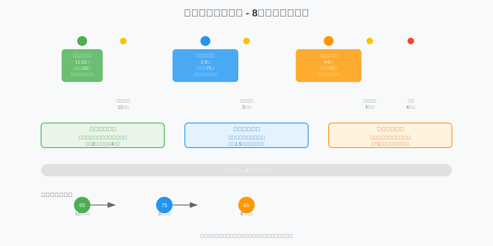
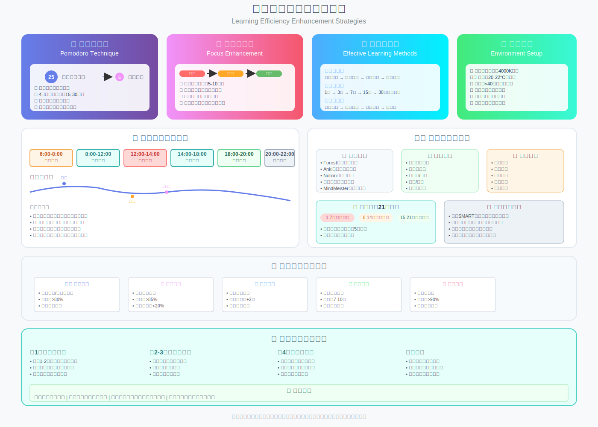

返回首页
时间管理与学习计划
心态提示：不是因为看见，所以相信；而是因为相信，所以看见。
今天不追求完美，只追求开始：先做15分钟最小任务，再把计划跑起来。需要一套完整的自我激励方案可以看 心理建设。
📅 8个月详细学习时间规划
🎯 Q1: 11月-1月（基础重建期）
📚 11月目标：基础扫盲
- 周1-2: 数学（有理数、方程）+ 英语（词汇基础500词）
- 周3-4: 物理（声光热基础）+ 数学（不等式、函数初步）
- 学习资料: 《5年中考3年模拟》基础篇 + 洋葱学院视频
- 目标分数: 各科达到60分以上
📚 12月目标：完成初二下到初三上基础内容
- 周1-2: 数学（一次函数、几何基础）+ 物理（力学入门）
- 周3-4: 数学（二次函数基础）+ 英语语法系统过一遍
- 学习资料: 《教材完全解读》+ 《典中点》基础题
- 目标分数: 各科达到70分以上
📚 1月目标：第一轮基础题训练 + 期末备考
- 周1-2: 各科基础题专项训练
- 周3-4: 期末考试复习
- 🎯 里程碑: 各科达到75分以上
🚀 Q2: 2月-4月（强化提升期）
📚 2月目标：春节+开学,真题入门
- 周1-2: 春节适度放松,每天保持2小时学习
- 周3-4: 开始刷2020-2023年各地中考真题（只做基础+中档题）
- 学习资料: 《中考真题分类汇编》
📚 3月目标：题型专项突破
- 周1: 数学（几何证明专题）+ 物理（电学基础）
- 周2: 数学（函数综合）+ 化学（计算专题）
- 周3: 英语（阅读理解技巧）+ 物理（力学综合）
- 周4: 各科错题整理周
📚 4月目标：一模备考 + 查漏补缺
- 周1-2: 一模重点题型训练
- 周3: 一模考试
- 周4: 一模错题深度分析
- 🎯 里程碑: 一模达到80分以上
🏆 Q3: 5月-6月（模拟强化期）
📚 5月目标：二模强化 + 高频考点巩固
- 周1-2: 各科高频考点刷题
- 周3: 二模考试
- 周4: 二模总结 + 专项突破
📚 6月1-15日：中考前最后收官
- 周1: 模拟套卷训练（每天一套完整卷）
- 周2: 错题本反复过 + 回归课本
- 周3: 调整状态,轻度复习
- 🎯 目标: 中考冲击90分+
⏰ 每日详细时间安排表
📋 工作日时间表（周一至周五）
| 时间段 | 内容 | 时长 | 备注 |
|---|---|---|---|
| 6:30-7:00 | 起床+早读英语 | 30分钟 | 背单词/课文 |
| 7:00-7:30 | 早餐+上学路上听力 | 30分钟 | 可可英语听力 |
| 12:00-12:30 | 午休前刷单词 | 10分钟 | 百词斩 |
| 放学后15分钟 | 回顾当天课堂笔记 | 15分钟 | 及时消化 |
| 18:30-19:00 | 晚饭+休息 | 30分钟 | - |
| 19:00-20:00 | 数学专项 | 60分钟 | 视频学习/刷题 |
| 20:00-20:10 | 休息 | 10分钟 | 眼保健操 |
| 20:10-20:50 | 物理/化学 | 40分钟 | 隔天轮换 |
| 20:50-21:00 | 休息 | 10分钟 | - |
| 21:00-21:40 | 英语 | 40分钟 | 阅读+完形 |
| 21:40-22:10 | 政治/历史 | 30分钟 | 背诵为主 |
| 22:10-22:30 | 整理错题+明日计划 | 20分钟 | - |
| 22:30-23:00 | 洗漱+睡前过单词 | 30分钟 | - |
总学习时长：约4小时（不含课堂时间）
🏠 周末时间表（周六/周日）
| 时间段 | 内容 | 时长 |
|---|---|---|
| 8:00-9:00 | 早餐+英语晨读 | 60分钟 |
| 9:00-11:00 | 数学深度学习 | 120分钟 |
| 11:00-11:30 | 休息+整理笔记 | 30分钟 |
| 11:30-12:30 | 物理专题 | 60分钟 |
| 12:30-14:00 | 午饭+午休 | 90分钟 |
| 14:00-15:30 | 理科刷题 | 90分钟 |
| 15:30-16:00 | 运动/放松 | 30分钟 |
| 16:00-17:30 | 英语专项 | 90分钟 |
| 17:30-18:30 | 晚饭+休息 | 60分钟 |
| 18:30-20:00 | 文科学习 | 90分钟 |
| 20:00-21:30 | 本周错题复习 | 90分钟 |
| 21:30-22:30 | 自由时间/预习 | 60分钟 |
总学习时长：约8小时
📊 整体每周时间分配表（详细版）
第一阶段（11-1月）周一至周五
| 时间 | 周一 | 周二 | 周三 | 周四 | 周五 |
|---|---|---|---|---|---|
| 6:30-7:00 | 英语早读 | 英语早读 | 英语早读 | 英语早读 | 英语早读 |
| 19:00-20:00 | 数学基础 | 数学基础 | 数学基础 | 数学基础 | 数学基础 |
| 20:10-20:50 | 物理基础 | 化学基础 | 物理基础 | 化学基础 | 物理基础 |
| 21:00-21:40 | 英语语法+阅读 | 英语语法+阅读 | 英语语法+阅读 | 英语语法+阅读 | 英语作文 |
| 21:40-22:10 | 政治背诵 | 历史背诵 | 政治背诵 | 历史背诵 | 文科复习 |
| 22:10-22:30 | 整理错题 | 整理错题 | 整理错题 | 整理错题 | 本周总结 |
第二阶段（2-4月）周一至周五
| 时间 | 周一 | 周二 | 周三 | 周四 | 周五 |
|---|---|---|---|---|---|
| 6:30-7:00 | 英语早读+听力 | 英语早读+听力 | 英语早读+听力 | 英语早读+听力 | 英语早读+听力 |
| 19:00-20:00 | 数学刷题 | 数学刷题 | 数学刷题 | 数学刷题 | 数学刷题 |
| 20:10-20:50 | 物理专题 | 化学专题 | 物理专题 | 化学专题 | 理科综合 |
| 21:00-21:40 | 英语阅读3篇 | 英语完形2篇 | 英语阅读3篇 | 英语综合 | 英语作文 |
| 21:40-22:10 | 政治刷题 | 历史刷题 | 政治刷题 | 历史刷题 | 文科测试 |
| 22:10-22:30 | 错题整理 | 错题整理 | 错题整理 | 错题整理 | 周总结 |
第三阶段（5-6月）周一至周五
| 时间 | 周一 | 周二 | 周三 | 周四 | 周五 |
|---|---|---|---|---|---|
| 6:30-7:00 | 英语+政治背诵 | 英语+历史背诵 | 英语+政治背诵 | 英语+历史背诵 | 英语+时事 |
| 19:00-20:00 | 数学高频题 | 数学高频题 | 数学高频题 | 数学高频题 | 数学模拟 |
| 20:10-20:50 | 物理高频题 | 化学高频题 | 物理模拟 | 化学模拟 | 理科综合 |
| 21:00-21:40 | 英语保持训练 | 英语保持训练 | 英语保持训练 | 英语保持训练 | 英语模拟 |
| 21:40-22:10 | 政治时事+背诵 | 历史高频考点 | 政治模拟 | 历史模拟 | 文科总复习 |
| 22:10-22:30 | 看错题本 | 看错题本 | 看错题本 | 看错题本 | 看错题本 |
🎯 核心学习方法与策略
❌ 错题本使用法（最重要！）
📚 错题本分类：
- 理科（数学、物理、化学）共用1本厚本
- 英语单独1本
- 文科（政治、历史）共用1本
📝 记录格式：
日期: 2024.11.15
科目: 数学 - 二次函数
错题原因: □概念不清 ☑方法不会 □计算错误 □审题失误
原题: [抄题或剪贴]
我的答案: [写出当时的答案]
正确答案: [写出正确答案]
解题思路: [用自己的话写出思路]
相似题: [找2道类似题练习]
复习日期: □第3天 □第7天 □第15天 □第30天
🔄 复习频率：艾宾浩斯记忆曲线
- 第1天: 做错当天
- 第3天: 第一次复习
- 第7天: 第二次复习
- 第15天: 第三次复习
- 第30天: 第四次复习
📚 专注力提升
- 🍅 番茄工作法：25分钟专注+5分钟休息
- 🏠 环境优化：安静、整洁的学习空间
- 📱 手机管理：学习时间远离干扰源
- ⏰ 时间块管理：将学习任务分解为小块
🧠 记忆技巧
- 📈 艾宾浩斯遗忘曲线：及时复习，间隔重复
- 🔗 联想记忆法：建立知识间联系
- 🗺️ 思维导图：可视化知识结构
- 👨🏫 费曼学习法：教授他人来检验理解
🛠️ 推荐时间管理工具
📅 学习计划表
制作详细的周计划和日计划，包含具体时间和任务安排。建议使用Excel或专门的计划应用。
- 每日具体时间安排
- 每周学习目标设定
- 进度跟踪和调整
🍅 番茄钟应用
使用番茄工作法应用，提高学习专注度和效率。推荐Forest、番茄TODO等应用。
- 25分钟专注计时
- 休息时间提醒
- 学习数据统计
📝 学习记录本
记录每日学习内容、时间和效果，便于总结和调整。可以使用纸质本或电子记录。
- 每日学习时长记录
- 学习效果评估
- 问题和改进点记录
❌ 错题整理本
分科目整理错题，定期复习，避免重复犯错。这是提分最有效的工具。
- 分科目分类整理
- 错误原因分析
- 定期复习计划
⚠️ 常见时间管理问题解决
❗ 问题：作业做不完
🎯 解决方案：
🛑 立即停止的作业：
- 机械抄写类（抄错题本、抄课文、罚抄）
- 重复性计算（会做的题反复做）
- 超纲难题（中考不考的竞赛题）
✅ 必须完成的作业：
- 老师会讲评的题
- 错题类型的变式练习
- 基础概念的填空选择
💬 与老师沟通话术：
"老师，孩子现在作业确实做不完。我想和您商量：抄写类作业能否用'错题本整理'替代？重复的题能否只做一半？我保证让他把您课上讲的例题搞懂，行吗？"
❗ 问题：学习效率低
🎯 解决方案：
🔍 效率低的常见原因：
- 注意力不集中（手机干扰、环境嘈杂）
- 学习方法不当（死记硬背、不理解）
- 疲劳学习（睡眠不足、连续学习时间过长）
- 目标不明确（不知道要学什么）
🔧 改进措施：
- 使用番茄工作法，25分钟专注+5分钟休息
- 创造安静的学习环境，远离手机
- 每天保证8小时睡眠
- 制定明确的学习目标和计划
❗ 问题：时间分配不合理
🎯 解决方案：
⚖️ 科目时间分配原则：
- 数学：35%（最重要，拉分最大）
- 物理：20%（理科重点）
- 英语：20%（性价比高）
- 化学：15%（相对简单）
- 政治历史：10%（最后突击）
🔄 调整策略：
- 每周评估各科进步情况
- 根据考试成绩调整时间分配
- 薄弱科目适当增加时间
- 强势科目保持即可
❗ 问题：缺乏学习动力
🎯 解决方案：
🎉 建立正反馈机制：
- 设定小目标，及时庆祝达成
- 记录每日进步，可视化成长
- 寻找学习伙伴，互相鼓励
- 家长给予适当奖励和认可
🎯 目标激励法：
- 明确中考目标学校
- 了解目标学校的优势
- 想象考上后的美好生活
- 制作目标学校的照片贴在书桌前